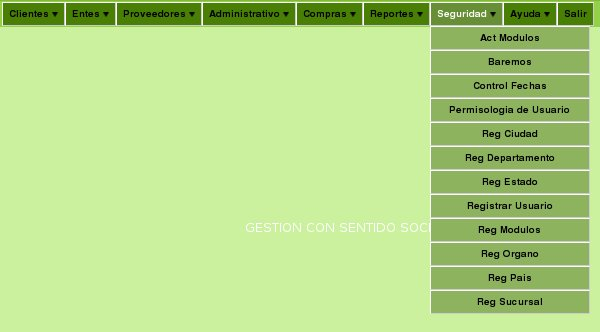

J-31180863-9
Al colocar el Mouse sobre el Módulo Seguridad Se despliega el siguiente Menú de opciones. (Ver figura 1) Las opciones que se manejan en este Módulo son: Act Modulos: Actualiza Algun Módulo. Baremos: Actualiza y Registra Baremos. Control Fechas: Actualiza y Registra Fechas de días Feriados, Permisos o Vacaciones de los Médicos. Permisologia Usuarios: Asigna o Elimina privilegios de los usuarios en el sistema. Reg Ciudad: Registra una Ciudad. Reg Departamento: Registra un Departamento. Reg Estado: Registra un Estado. Reg Usuario: Registra un Usuario. Reg Modulo: Registra un Modulo. Reg Organo: Registra un Organo. Reg Pais: Registra un Pais. Reg Sucursal: Registra una Sucursal.Módulo Seguridad

Figura 1